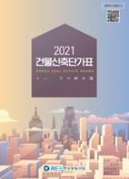

지진발생시 경제적 피해액은 크게 건축물과 사회기반시설, 산업시설 등의 물리적인 자산의 파괴 및 손상에 의한 직접 피해액과 이러한 건물 및 시설의 사용중단으로 인한 생산중단, 고용손실, 영업손실비용, 임시주거시설 확보 및 잔해처리에 소요되는 비용 등을 포함한 간접피해액으로 나누어 생각할 수 있다. 간접적인 피해액의 경우 피해를 입은 지역의 생산 및 영업의 중단이 타 지역으로의 공급망 차질로 이어지며 이에 따라 전체적으로 물가와 투자에 영향을 미쳐 단기적인 피해 뿐 아니라 장기적인 성장저하로 이어질수 있다. 이처럼 간접피해는 직접피해의 여파가 복잡한 상호 연관성을 가지면서 확산되므로 지진에 의한 경제적 피해액 산정을 위해서는 직접적인 피해액의 정확한 산정이 중요하다.
본 연구에서는 이중 가장 기초적인 요소인 건축물 피해금액의 산정 절차를 다루고 있다. 즉, 지진 혹은 지진화재로 인해 구조요소 및 비구조요소에 손상이 발생한 경우 이를 원래 상태로 복구하거나 보강하기 위해 소요되는 총비용을 의미하며, 다음과 같이 정의하였다.
■ 건축물 피해복구비용의 정의
지진진동에 의한 건물 피해와 지진화재에 의한 피해를 포함
복구비용 기반으로 평가. 즉, 신축단가적용 (피해액과 달리 감가상각에 의한 잔존가치 고려 않음)
일반 건축물의 손실액만으로 한정 (상업시설과 공장의 설비 및 부품의 피해는 제외)
본 연구에서 고려하는 지진의 크기는 건축물 피해위험도와 지진화재위험도에서와 동일하다. 즉, 평가단위 행정구역 간의 상대비교를 위해 모든 지역에서 동일한 유효지반가속도가 작용한다고 가정하고 이 때 발생하는 붕괴 및 지진화재에 의한 건물피해액을 금액으로 환산한 것이다. 고려하는 지진의 재현주기는 2400년, 1000년, 500년의 3종류이며, 각 경우 유효지반가속도는 지진구역 1로 가정하여 0.22g, 0.154g, 0.11g를 사용하였다. 유효지반가속도는 기반암의 지진가속도이므로 각 건물에 작용하는 지진력은 해당건물의 지반조건에 따른 지반증폭계수를 고려하여 산정된다. 건물별로 작용하는 스펙트럼 가속도의 산정절차는 건축물 피해위험도 및 지진화재위험도 평가시 산정절차와 동일하다. (건축물 피해위험도 및 재난관리위험도 절차서 참조)
지진진동에 의한 피해, 즉 흔들림에 의한 건물의 손상에 대한 피해복구비용의 산정절차는 기본적으로 복구비용은 HAZUS의 개념을 따랐다. 하지만, HAZUS에 제시된 절차에 따를 경우 여러 단계의 복잡한 계산이 요구되므로 이를 간략화하여 반파이상의 손상 발생확률에 미리 계산된 피해금액환산계수를 곱하여 산정하도록 계산절차를 단순화하였다.
지진화재에 의한 피해복구비용은 지진재현주기별 출화건수가 1.0 이상인 건물에 대해서만 평가하는데, 지진화재 피해복구비용은 지진화재위험도 산정결과인 소실연면적비율에 해당건물의 신축단가와 손해율을 곱하여 산정한다. 지진시 흔들림에 의한 피해와 지진화재에 의한 피해가 동시에 발생할 경우 두 값중 큰 값에 작은 값의 절반을 더한 값으로 최종 피해복구금액을 산정하였다.
2절에서는 HAZUS에 제시된 건축물 손상피해액 산정절차는 요약하였으며 1.3절에는 본 연구에서 사용한 건축물 피해복구비용절차 및 지진화재피해복구비용의 산정절차를 기술하였다.
HAZUS의 평가절차
HAZUS에서는 건물의 지진피해액(진동에 의한 손상 혹은 붕괴)을 지진에 의한 건축물 손상상태를 5단계로 구분하고 각 단계별 발생확률에 손상정도에 따른 복구비용을 곱한 값을 합산하여 산정한다. 건축물의 손상은 구조체와 가속도 민감형 비구조요소, 변위민감형 비구조요소로 나누어 고려한다. 구조체 혹은 비구조요소의 손상은 구조형식에 따라 달라지며, 가격(신축비용 혹은 설치비용)은 건물의 용도에 따라 달라진다. 따라서 구조형식이 이고 용도가 인 건축물의 지진피해액은 식 (1.2-1)과 같이 나타낼 수 있다.
식 (2-1)
여기서, , , 는 각각 구조물, 가속도민감형 비구조요소, 변위민감형 비구조요소의 피해액을 나타내며, 는 구조형식, 는 건축물의 용도를 나타낸다. HAZUS에서는 전체건물을 36종의 구조형식과 33종의 용도로 분류한다.
식 (1.2-2)는 구조형식이 이고 용도분류가 인 건축물의 구조적 피해액 산정식을 나타낸다. 즉, 주어진 지진동에 의해 예상되는 구조체의 손상정도별 발생확률에 손상단계별 감가율과 건물의 신축단가를 곱하여 산정한다. 구조체의 손상은 취약도함수를 통해 산정되는 4단계의 손상에 손상이 없음(No damage)을 추가한 5단계, 즉 No damage, Slight, Moderate, Extensive, Complete의 5단계별 발생확률을 구조형식별 취약도 함수를 사용하여 구한다. 앞서 언급한 바와 같이 본 연구에서는 지진에 의해 발생한 손실을 원상태로 복구하기 위한 비용을 의미하므로 감가상각을 고려하지 않았다.
식 (2-2)
여기서,
: 용도 에 해당하는 건물의 구조체 신축단가
: 구조형식 인 건물의 구조체에 의 손상이 발생할 확률. 구조형식별 구조체 취약도 함수를 통해 산정
: 용도 에 해당하는 건물의 구조체에 의 손상이 발생할 경우 가치감소율(감가율)
: 손상단계. (No damage, Slight, Moderate, Extensive, Complete) 에 해당하는 5단계로 나뉨
가속도민감형 비구조요소의 지진피해금액도 구조체와 유사한 절차로 산정한다.
식 (2-3)
여기서,
: 용도 에 해당하는 건물의 가속도민감형 비구조요소의 신규설치비용
: 구조형식 인 건물의 가속도민감형 비구조요소에 의 손상이 발생할 확률. 구조형식별 가속도민감형 비구조요소 취약도 함수를 통해 산정
: 용도 에 건물의 가속도민감형 비구조요소에 의 손상이 발생할 경우 가치감소율(감가율)
변위민감형 비구조요소의 지진피해금액의 산정절차도 동일하다.
식 (2-4)
여기서,
: 용도 에 해당하는 건물의 변위민감형 비구조요소의 신규설치비용
: 구조형식 건물의 변위민감형 비구조요소에 의 손상이 발생할 확률. 구조형식별 변위민감형 비구조요소 취약도 함수를 통해 산정
: 용도 해당하는 건물의 변위민감형 비구조요소에 의 손상이 발생할 경우 가치감소율(감가율)
이상과 같이 HAZUS에서 제시한 절차를 통해 피해액을 산정하기 위해서는 구조형식별 구조체, 가속도민감형 비구조요소, 변위민감형 비구조요소의 취약도함수와 건물 용도별 단위면적당 신축비용에 관한 정보, 그리고 용도와 손상정도별 가치감소율에 대한 정보가 필요하다. 또한 이러한 절차를 통해 어떤 지역의 지진피해를 산정하기 위해서는 구조형식, 용도 및 연면적 정보를 가진 건축물 목록이 필요하며 지반증폭을 고려하기 위해서는 지반정보도 요구된다.
건축물 피해 복구금액 평가절차
지진피해복구금액 (진동에 의한 손상)
HAZUS에서는 구조형식을 33종으로 분류하고 각 형식별로 구조체, 가속도민감형 비구조요소, 변위민감형 비구조요소의 취약도함수를 제공하고 있다. 건물용도는 36종으로 분류하고 있다. 또한 36종의 건물용도별로 Slight, Moderate, Extensive, Complete의 각 손상단계별 감가율도 제공하고 있다. 하지만 HAZUS의 건축물 구조유형과 건물 용도분류, 그리고 용도별 신축단가는 우리나라에 맞지 않으므로 우리나라 건물을 대상으로 개발된 데이터를 적용하여 피해액을 산정하였다.
- 건축물 취약도 함수
본 연구에서는 건축물 피해위험도 산정시와 동일한 구조형식 분류 및 취약도 함수를 사용하였다. 국내 건축물의 지진취약도함수는 2009년 소방방재청에 의해 최초 개발되었으며 이후, 2021년 국립재난안전연구원의 연구를 통해 구조물의 구조형식분류 및 취약도 함수의 산정절차가 개선되었다. (건축물 피해위험도 및 재난관리위험도 평가절차서 참조)
본 연구에서 사용한 국내건물의 취약도함수는 내진설계수준에 따라 구분된다. 구조체의 경우 비내진건물을 의미하는 Precode, 2000년 내진설계기준을 적용한 M00, 2009년 내진설계기준을 적용한 M09로 나뉘어지며, 비구조요소의 경우 가속도민감형, 변위민감형으로 나뉘어 서로 다른 취약도함수가 사용되며 각 경우 구조물의 내진설계 수준에 따라 Precode (비내진건물), Moderate code (내진설계된 건물)로 나뉜다.
- 건축물 용도별 신축단가
건축물의 용도분류 및 각 용도별 신축단가는 한국부동산원에서 작성한 건물신축단가표를 참고하여 작성하였다. 한국부동산원의 건물신축단가표에서는 건축물의 용도를 크게 18종으로 분류하고 좀 더 세부적으로 46종의 대표건축물을 정의하고 있다. 또한 전기설비, 위생설비, 급배수-급탕설비등의 부대설비 11종에 대해서도 단위면적당 단가를 수록하고 있다.
본 절차서에서는 건축물대장에 수록된 세부용도코드와 의 정보에서 분류한 건축용도별 건축물을 한국부동산원에서 분류한 46종의 대표건축물 중 어디에 속하는지 판단하였고, 신축건물단가표의 단위면적당 표준단가를 DB화하여 단가를 산정하였다. 부대설비의 경우 특성을 고려하여 가속도민감형 비구조요소와 변위민감형 비구조요소로 구분하고, 비구조요소의 취약도함수로부터 손상단계별 확률을 구한 후 손상단계별로 감가 비용을 산정하였다. 즉, 전기설비는 변위민감형, 냉난방설비는 가속도민감형, 급배수급탕설비는 변위민감형과 가속도민감형 취약도함수의 평균값을 가지는 것으로 가정하였다.

[그림 2-3] 한국부동산원의 신축건물 단가표
- 피해액 평가절차의 개선
국내 건축물의 구조형식별 취약도 함수와 용도별 신축단가를 사용하여 지진피해복구비용을 산정할 경우 구체적인 수행 순서는 다음과 같다.
① 지진동의 재현주기 결정: 본 연구에서 지진동의 재현주기는 2400년, 1000년, 500년을 고려하며 각 경우 지반가속도는 0.22g, 0.154g, 0.11g를 사용한다. 이 지반가속도는 고려하는 모든 지역에 동일한 값을 적용한다.
② 대상지역의 건축물 목록 준비: 평가대상지역의 건축물 대장으로부터 건축물 목록을 작성하고 각 건물별 정보로로부터 평가에 필요한 정보를 결정한다. 즉, 각 건물의 위치(위도 및 경도 좌표로부터 지반조건(~)을 결정하고, 구조재료 및 용도로부터 41종의 구조형식을 결정한다. 또한 건축일자를 기준으로 판단한 내진설계수준를 결정하며, 건축물 대장의 세부용도로부터 46종의 부동산원 용도로 변환한다.
③ 손상단계별 발생확률 산정: 각 건물별로 지반조건에 해당하는 지반증폭을 고려하여 지진하중을 산정하고, 4단계의 손상 (Slight, Moderate, Extensive, Complete)별 발생확률을 구한다. 취약도함수는 내진설계수준에 따라 구분된다. 구조체의 경우 비내진건물을 의미하는 Precode, 2000년 내진설계기준을 적용한 M00, 2009년 내진설계기준을 적용한 M09로 나뉘어지며, 비구조요소의 경우 가속도민감형, 변위민감형으로 나뉘어 서로 다른 취약도함수가 사용되며 각 경우 구조물의 내진설계 수준에 따라 Precode (비내진건물), Moderate code (내진설계된 건물)로 나뉜다.
④ 피해복구비용 산정: 건축물 목록(건축물 대장)내의 개별건물별 구조체 및 비구조요소의 피해액을 산정하고 전체 피해액을 합산한다. 즉, 식 (2-2)~(2-4)에 따라 개별 건물의 구조형식과 용도에 따라 구조체 및 비구조요소의 손상단계별 발생확률에 각 용도 및 손상단계별 피해율를 곱하고 다시 신축단가를 곱하여 피해복구비용 산정한다. 구조체의 신축단가는 한국부동산원의 건물신축단가표로부터 결정하였다. 비구조요소의 경우 신축건물단가표에서 비구조요소는 전기설비, 급배수급탕성비, 냉난방설비으로 구분하여 단가를 제시하고 있다. 전기설비는 변위민감형, 냉난방설비는 가속도민감형, 급배수급탕설비는 변위민감형과 가속도민감형 취약도함수의 평균값을 가지는 것으로 가정하였다.
식 (2-2)~(2-4)의 피해복구금액의 계산과정을 풀어서 표현하면 모두 동일하게 다음의 식(3-1)와 같은 구조를 가지고 있다.
식 (3-1)
여기서, 는 건물용도별 신축단가(신규설치비용)이며 , , , 는 각각 구조형식이 인 건축물에서 구조체에 Slight, Moderate, Extensive, Complete에 해당하는 손상의 발생확률을 의미하며, , , , 는 구조형식이 이고 용도가 인 건축물에서 각 단계별 손상단계별 가치감소율(감가율)을 의미한다.
개별건물의 전체 피해금액 산정을 위해서는 위와 유사한 계산을 구조체 뿐 아니라 전기설비, 기계설비 및 냉난방설비에 대해서도 수행하여야 하므로 계산이 복잡해진다. 하지만 계산에 사용되는 구조체, 전기설비, 기계설비, 냉난방설비의 , , 의 조합은 한정된다. 즉, 단위면적당 피해금액은 지반가속도의 크기, 지반조건, 구조형식, 건축물의 용도에 따라 결정되므로 식 (3-1)의 손상단계별 확률중 하나의 수치를 기준으로 환산계수 테이블을 작성하여 계산과정을 단순화할 수 있다. 본 연구에서는 식 (3-2)과 같이 환산계수 를 반파이상의 손상발생 확률을 기준으로 정의하였다.
식 (3-2)
따라서 전체 피해금액은 식 (3-3)과 같은 계산을 통해 산정가능하다. 이 값은 단위면적당의 피해금액이므로 개별 건물의 피해금액은 건물별 연면적을 곱하여 산정한다.
식 (3-3)
피해복구금액 환산계수는 전체피해복구비용을 반파이상의 손상발생확률로 나누어 구하게 되므로 지반가속도의 크기 3종(0.22g, 0.154g, 0.11g), 지반조건(~), 구조형식 41종, 부동산원 용도 46종에 따라 다른 값을 가진다. [표 1.3-7]은 환산계수의 예시로 지반가속도 0.22g, 지반, 내진설계수진의 Precode인 경우를 나타낸 것이다.
지진화재에 의한 피해복구비용 산정절차
지진화재 발생시 건물의 피해액 산정절차는 소방청의 ‘화재피해액 산정절차’를 참고하였다. 소방청의 경우 화재로 인한 건물의 피해액은 화재피해 대상건물과 동일한 구조, 용도, 질, 규모의 건물을 재건축하는데 소요되는 금액(재건축비)에서 사용손모 및 경과년수에 대응한 감가공제를 한 다음 손해율을 곱한 금액으로 산정하고 있다. 소방청의 화재피해액 산정식은 식 (3-4)과 같다.
식 (3-4)
화재피해액 = (소실면적의 재건축비)×(잔가율)×(손해율)
여기서,
이다.
하지만 본 연구에서는 복구비용기반으로 평가하므로 잔가율은 고려하지 않는다. 소방청의 ‘화재피해액 산정절차’에서 손해율은 재사용이 불가능한 경우 90~100%, 부분적을 재사용이 가능한 경우 35~60%, 마감재가 소실된 경우 20% 이하로 보고 있다. 또한, 화재조사 및 보고규정 (소방청 훈령 제 304호)에서 전소, 반소, 부분소를 다음과 같이 규정하고 있다.
전소
건물의 70%이상이 소실되었거나 또는 그 미만이라도 잔존부분을 보수하여도 재사용이 불가능 한 것
반소
건물의 30%이상 70%미만이 소실된 것
부분소
전소, 반소화재에 해당되지 아니하는 것
본 연구에서는 위의 규정을 참고하여 다음과 같이 소실연면적비율당 손해율을 설정하고 이를 지진화재 피해복구비용 산정시 사용하였다.
[표 3-1] 소실연면적비율당 손해율
소실정도(소실연면적비율)
피해정도
손해율(%)
전소 (70% 이상)
주요구조체의 재사용이 불가능한 경우
90
반소
70% 미만 50% 이상
주요구조체는 재사용 가능하나 기타 부분의 재사용이 불가능한 경우
공동주택 호텔 병원
65
일반주택, 사무실, 점포
60
공장, 창고
55
50% 미만 30% 이상
천장 벽 바닥 등 내부마감재 등이 소실된 경우
공장, 창고 제외
40
공장, 창고
35
부분소
30% 미만 10% 이상
지붕 외벽 등 외부마감재 등이 소실된 경우
공장 및 창고
30
위의 경우 제외
20
10% 미만 0% 이상
화재로 인한 수손 시 또는 그을음만 입은 경우
10
지진화재위험도는 해당건물이 내화구조여부 및 인접건물과의 거리를 고려하여 소실연면적비와 출화건수를 산출하여 산정한다. 따라서, 지진화재피해복구금액도 지진화재위험도 산정 절차와 유사하게 식 (3-5) 식에 따라 산정한다.

 ,
,  ,
,  는 각각 구조물, 가속도민감형 비구조요소, 변위민감형 비구조요소의 피해액을 나타내며,
는 각각 구조물, 가속도민감형 비구조요소, 변위민감형 비구조요소의 피해액을 나타내며,  는 구조형식, 는 건축물의 용도를 나타낸다. HAZUS에서는 전체건물을 36종의 구조형식과 33종의 용도로 분류한다.
는 구조형식, 는 건축물의 용도를 나타낸다. HAZUS에서는 전체건물을 36종의 구조형식과 33종의 용도로 분류한다. 
 : 용도 에 해당하는 건물의 구조체 신축단가
: 용도 에 해당하는 건물의 구조체 신축단가 : 구조형식
: 구조형식  의 손상이 발생할 확률. 구조형식별 구조체 취약도 함수를 통해 산정
의 손상이 발생할 확률. 구조형식별 구조체 취약도 함수를 통해 산정
 : 용도 에 해당하는 건물의 가속도민감형 비구조요소의 신규설치비용
: 용도 에 해당하는 건물의 가속도민감형 비구조요소의 신규설치비용 : 구조형식
: 구조형식  : 용도 에 건물의 가속도민감형 비구조요소에
: 용도 에 건물의 가속도민감형 비구조요소에 
 : 용도 에 해당하는 건물의 변위민감형 비구조요소의 신규설치비용
: 용도 에 해당하는 건물의 변위민감형 비구조요소의 신규설치비용 : 구조형식
: 구조형식  : 용도 해당하는 건물의 변위민감형 비구조요소에
: 용도 해당하는 건물의 변위민감형 비구조요소에 
 는 건물용도별 신축단가(신규설치비용)이며
는 건물용도별 신축단가(신규설치비용)이며 .gif) ,
, .gif) ,
, .gif) ,
, .gif) 는 각각 구조형식이 인 건축물에서 구조체에 Slight, Moderate, Extensive, Complete에 해당하는 손상의 발생확률을 의미하며,
는 각각 구조형식이 인 건축물에서 구조체에 Slight, Moderate, Extensive, Complete에 해당하는 손상의 발생확률을 의미하며, .gif) ,
, .gif) ,
, .gif) ,
, .gif) 는 구조형식이 이고 용도가 인 건축물에서 각 단계별 손상단계별 가치감소율(감가율)을 의미한다.
는 구조형식이 이고 용도가 인 건축물에서 각 단계별 손상단계별 가치감소율(감가율)을 의미한다. ,
,  의 조합은 한정된다. 즉, 단위면적당 피해금액은 지반가속도의 크기, 지반조건, 구조형식, 건축물의 용도에 따라 결정되므로 식 (3-1)의 손상단계별 확률중 하나의 수치를 기준으로 환산계수 테이블을 작성하여 계산과정을 단순화할 수 있다. 본 연구에서는 식 (3-2)과 같이 환산계수 를 반파이상의 손상발생 확률을 기준으로 정의하였다.
의 조합은 한정된다. 즉, 단위면적당 피해금액은 지반가속도의 크기, 지반조건, 구조형식, 건축물의 용도에 따라 결정되므로 식 (3-1)의 손상단계별 확률중 하나의 수치를 기준으로 환산계수 테이블을 작성하여 계산과정을 단순화할 수 있다. 본 연구에서는 식 (3-2)과 같이 환산계수 를 반파이상의 손상발생 확률을 기준으로 정의하였다.

 ~
~ ), 구조형식 41종, 부동산원 용도 46종에 따라 다른 값을 가진다. [표 1.3-7]은 환산계수의 예시로 지반가속도 0.22g,
), 구조형식 41종, 부동산원 용도 46종에 따라 다른 값을 가진다. [표 1.3-7]은 환산계수의 예시로 지반가속도 0.22g,  지반, 내진설계수진의 Precode인 경우를 나타낸 것이다.
지반, 내진설계수진의 Precode인 경우를 나타낸 것이다. 이다.
이다.